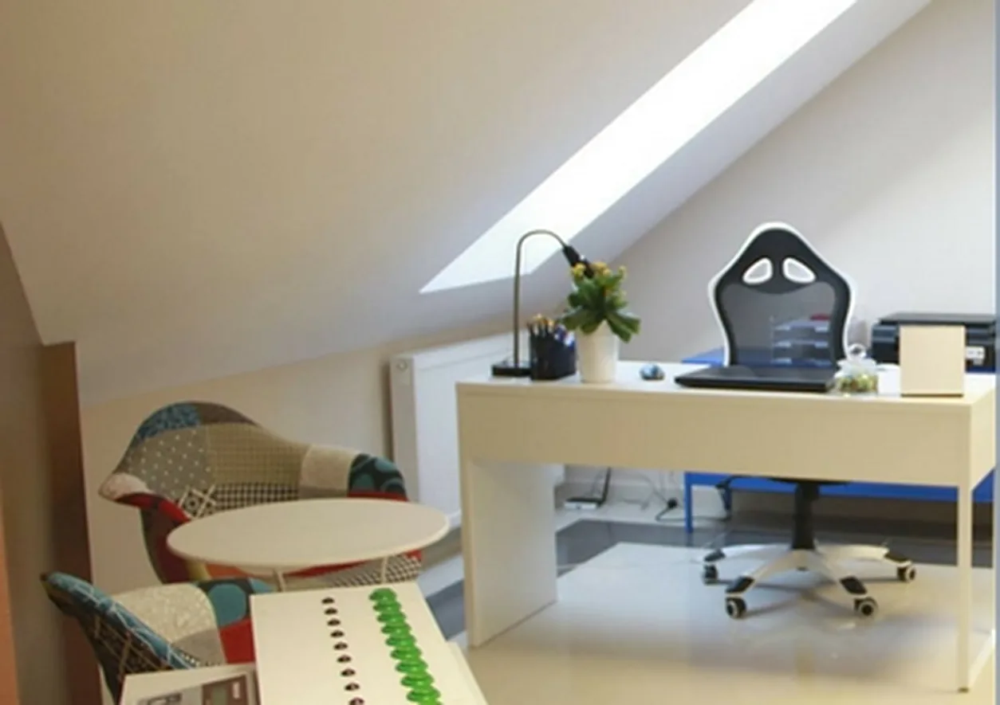

Psycholog i pracownia psychotechniczna w Lubaczowie
Badania kierowców i operatorów maszyn z terminem z dnia na dzień, pomoc psychologiczna dla dzieci i dorosłych oraz kursy online z zaświadczeniem placówki oświatowej.
Badanie psychologiczne lub psychotechniczne
Kierowcy wszystkich kategorii, instruktorzy i egzaminatorzy, taksówkarze, osoby po zatrzymaniu prawa jazdy, operatorzy wózków i maszyn, pracownicy ochrony.
Sprawdź swoje badanie i cenęPomoc psychologiczna
Konsultacja, porada, diagnoza i terapia dla dzieci, młodzieży i dorosłych. Także pedagog, logopeda, doradca zawodowy i porada psychologa online.
Zobacz, jak wygląda pierwsze spotkanieKursy i szkolenia online
Kursy psychologiczno-pedagogiczne i dla nauczycieli, start w dowolnym dniu, egzamin online i zaświadczenie placówki kształcenia ustawicznego.
Przejdź do kursówJakie badanie potrzebuję?
Wybierz, kim jesteś albo po co przychodzisz. Pokażemy nazwę badania, cenę z naszego cennika, ile trwa i co zabrać, a potem możesz od razu wybrać termin.
Zaznacz jedną z pozycji po lewej.
Nie ma Twojego przypadku? Zadzwoń: 511 035 215, powiemy, jakie badanie wykonać.
- Cena
- Czas badania
- Wynik
- zaświadczenie chwilę po badaniu
Co zabrać
Pomoc psychologiczna dla dzieci, młodzieży i dorosłych
Z każdym problemem możesz przyjść do psychologa ze specjalnością kliniczną i osobowości. Pierwsza wizyta to zwykle konsultacja, po której wiadomo, jaka forma pomocy będzie właściwa.
- Konsultacja
- 45-60 minut. Wstępne określenie problemu, propozycja terapii i pierwsze wskazówki. Czasem potrzeba kilku spotkań konsultacyjnych.
- Porada psychologiczna
- Do 60 minut. Doraźna pomoc w trudnej sytuacji i wspólne szukanie najlepszego rozwiązania.
- Diagnoza i opinia psychologiczna
- Wywiad, obserwacja i testy. Opinie m.in. do ZUS, do orzekania o niepełnosprawności, do spraw sądowych i do urlopu dla podratowania zdrowia nauczyciela.
Dorośli
- terapia psychologiczna i interwencja kryzysowa
- leczenie depresji
- terapia par, małżeństw i rodzin
- trudności związane z emigracją i akulturacją
- rehabilitacja neuropsychologiczna i psychomotoryczna
Dzieci i rodzice
- ocena gotowości szkolnej
- diagnoza dysleksji, dysgrafii, dyskalkulii, dysortografii
- przyczyny trudnych zachowań i problemów emocjonalnych
- wczesne wspomaganie rozwoju i wspomaganie uczenia się
- konsultacje wychowawcze dla rodziców
Treningi z psychologiem
Trening asertywności, umiejętności osobistych i społecznych, relaksacja metodą Schultza i Jacobsona, coaching motywacyjny.
Na miejscu także pedagog, specjalista wczesnego wspomagania rozwoju, doradca zawodowy, coach zdrowia i logopeda. Można też skorzystać z porady psychologa online.
Niepubliczna Placówka Kształcenia Ustawicznego „PSYCHODIA”, wpisana do ewidencji powiatu lubaczowskiego 15.12.2017 r. Numer RSPO 270751. Nadzór pedagogiczny: Podkarpacki Kurator Oświaty.
Kursy online z zaświadczeniem
Szkolenia prowadzimy indywidualnie, więc nabór trwa cały czas i kurs zaczynasz w dniu, w którym chcesz. Materiały dostajesz w formie elektronicznej, uczysz się we własnym tempie, a na koniec wykonujesz praktyczne zadanie egzaminacyjne online. Dyrektorem placówki jest psycholog.
Przykładowe kursy
- Podstawy profesjonalnej pomocy psychologicznej i interwencji dla osób w kryzysie i traumie
- Zaburzenia neurorozwojowe: ADHD, autyzm, zespół Aspergera - teoria i praktyka
- Opiekun osób starszych i niepełnosprawnych z podstawami neuropsychologii
- Rejestratorka medyczna z elementami promocji zdrowia
- Trener - szkoleniowiec w nauczaniu osób dorosłych
- Mediacje sądowe i pozasądowe
Cennik badań
Ceny brutto. Badania z zakresu psychologii transportu mają stałą cenę 150 zł.
Przed badaniem
Przyjdź wyspany, najedzony i wypoczęty, najlepiej nie po całym dniu pracy. Badanie kierowcy trwa przeciętnie 1,5 godziny (plus minus 30 minut), badanie operatora maszyn 30-45 minut. Zaświadczenie wydajemy chwilę po zakończeniu.
Jak wygląda badanie
Zaczyna się od swobodnej rozmowy z psychologiem. Potem wypełniasz testy psychologiczne typu papier-ołówek, a na końcu wykonujesz próby sprawności psychomotorycznej na aparaturze.
Co zabrać
- dowód osobisty
- prawo jazdy (kierowcy)
- skierowanie, jeśli je otrzymałeś
- okulary, jeśli ich używasz
- coś do picia i małą przekąskę
Masz skierowanie z policji, urzędu, od lekarza lub z sądu i minęło 30 dni od jego odebrania? Zadzwoń przed przyjściem, powiemy, co zrobić.
Kontakt i dojazd
Centrum Badań i Usług Psychologicznych PSYCHODIAul. płk. Stanisława Dąbka 2B
37-600 Lubaczów
511 035 215
ekursyonlinepl@gmail.com
Godziny badania dopasowujemy do Ciebie. Termin można umówić z dnia na dzień, a często nawet na ten sam dzień.
Wyznacz trasę